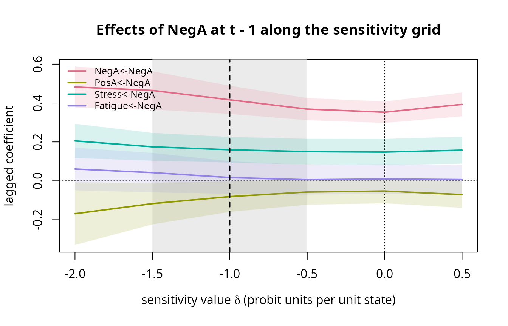

Sensitivity analysis for self-censoring: tilting, break-even values and calibration
Hsiu-Ting Yu
Source:vignettes/sensitivity-analysis.Rmd
sensitivity-analysis.RmdWhy estimation alone cannot repair self-censoring
Under self-censoring (motif M2) the current state itself causes the
skip: X_t -> R_t. No conditioning set of observed
variables blocks this edge, so no estimator that uses only the answered
prompts is consistent for the transition kernel
(vignette("dm-graphs")), and the tests of
vignette("testing-informativeness") can only say
that silence was informative, not by how much. The remedy is a
sensitivity analysis: fix the strength of self-censoring at a value
delta, estimate as if that value were true, and repeat over a range of
values. The result is not one estimate but a profile, together with the
range of values (the identified set) that the data cannot rule out.
The package implements this as tilting. The selection model is a probit,
\[P(R_t = 1 \mid X_t = x) = \Phi_N(\alpha + \delta' x),\]
with the sensitivity vector delta held fixed (never estimated) and the intercept alpha calibrated so that the model-implied response rate given the observed history equals the observed response rate. Complete adjacent pairs are then reweighted by
\[w_t = \frac{P(R_t = 1 \mid x_{t-1})}{P(R_t = 1 \mid x_t)},\]
an inverse-probability weight with a stabilized numerator, and the within-person VAR(1) is refitted with these weights. Because the weights depend on the parameters and the parameters on the weights, the two steps are iterated to a fixed point. When delta is the true selection vector, the population parameters are a fixed point.
The running example
Eighty persons, forty prompts in eight days of five, 70% compliance,
self-censoring on negative affect with delta = -1 (the
propensity to respond drops by one probit unit per unit of negative
affect), a passive sensor correlated .6 with the within-person
fluctuations of negative affect, and 10% randomized probes that force a
response.
sim <- simulate_ema(N = 80, T = 40, motifs = "M2", compliance = 0.7, delta = -1,
sensor_cor = 0.6, p_probe = 0.10, days = 5, seed = 21)
sim
#> Simulated EMA data: 80 persons x 40 prompts, 4 variables
#> motifs: M2 realized response rate: 0.7
truth <- default_params()$PhiOne tilt: fit_tilt()
fit_tilt() fits the tilted VAR(1) at one sensitivity
value. At delta = 0 it is the ordinary answered-pairs
estimator of fit_pairs().
f0 <- fit_tilt(sim$data, sim$vars, delta = 0, day = "day", probe = "Z")
f1 <- fit_tilt(sim$data, sim$vars, delta = -1, day = "day", probe = "Z")
rbind(untilted = f0$Phi[1, ], tilted = f1$Phi[1, ], truth = truth[1, ])
#> NegA PosA Stress Fatigue
#> untilted 0.3528018 -0.004147836 0.1127210 0.026364308
#> tilted 0.4165011 -0.015654289 0.1328041 0.004728538
#> truth 0.4000000 0.000000000 0.1500000 0.000000000Treating the skips as ignorable attenuates the autoregression of the self-censored variable (skipping the high moments cuts off the upper part of the trajectories); tilting at the true value moves the estimate toward the population value. The same holds for the means of the variables that the tilt touches (negative affect and, through their associations with it, positive affect and stress):
rbind(untilted = f0$mu, tilted = f1$mu, truth = default_params()$mu)
#> NegA PosA Stress Fatigue
#> untilted 1.980313 4.134264 2.566188 3.001217
#> tilted 2.297520 4.054181 2.755444 3.047208
#> truth 2.500000 4.000000 2.800000 3.000000Two diagnostics accompany every tilt. The effective number of pairs,
ess (the Kish measure \((\sum
w)^2 / \sum w^2\)), says how much of the sample the weights still
use, and max_weight flags a profile that rests on a few
heavily weighted pairs. The weights are not truncated on purpose: a
profile whose ess collapses is telling the analyst that the
sensitivity value is extreme for these data.
c(pairs = f1$n_pairs, ess = round(f1$ess), max_weight = round(f1$max_weight, 2),
iterations = f1$iterations, converged = f1$converged)
#> pairs ess max_weight iterations converged
#> 1379.0 1239.0 6.5 19.0 1.0When a person propensity is declared with self-censoring (M2 + M4),
propensity = "person" calibrates one intercept per person,
so that stable between-person differences in compliance are not read as
self-censoring.
The profile: tilt_profile()
tilt_profile() repeats the tilt over a grid,
warm-starting each fit from its neighbor, and collects the lagged
coefficients with cluster-robust confidence limits, the contemporaneous
partial correlations and the between-person means.
prof <- tilt_profile(sim$data, sim$vars, delta_grid = seq(-2, 0.5, by = 0.5), day = "day", probe = "Z")
prof
#> Tilt profile over delta in { -2, -1.5, -1, -0.5, 0, 0.5 } for NegA
#> Autoregressive coefficient of the self-censoring variable along the grid ( 1379 complete pairs):
#> delta estimate lower upper ess converged
#> -2.0 0.483 0.378 0.588 540 TRUE
#> -1.5 0.465 0.366 0.563 963 TRUE
#> -1.0 0.417 0.344 0.489 1239 TRUE
#> -0.5 0.369 0.312 0.426 1351 TRUE
#> 0.0 0.353 0.298 0.408 1379 TRUE
#> 0.5 0.393 0.332 0.454 1327 TRUEThe printed summary follows the autoregressive coefficient of the
self-censoring variable along the grid. All coefficients are in
prof$Phi, the partial correlations in
prof$pcor and the means in prof$mu:
subset(prof$Phi, coef == "Stress<-NegA")[, c("delta", "estimate", "lower", "upper")]
#> delta estimate lower upper
#> 9 -2.0 0.2052495 0.11713650 0.2933625
#> 25 -1.5 0.1751215 0.10363392 0.2466092
#> 41 -1.0 0.1597695 0.09395294 0.2255860
#> 57 -0.5 0.1501252 0.08393873 0.2163117
#> 73 0.0 0.1479884 0.08020549 0.2157713
#> 89 0.5 0.1577502 0.08851590 0.2269845
subset(prof$pcor, edge == "NegA--Stress")
#> delta edge estimate
#> 2 -2.0 NegA--Stress 0.2897371
#> 8 -1.5 NegA--Stress 0.2834852
#> 14 -1.0 NegA--Stress 0.2770801
#> 20 -0.5 NegA--Stress 0.2713879
#> 26 0.0 NegA--Stress 0.2662794
#> 32 0.5 NegA--Stress 0.2712504
round(prof$mu, 2)
#> NegA PosA Stress Fatigue
#> [1,] 2.65 3.93 2.98 3.14
#> [2,] 2.47 3.99 2.86 3.09
#> [3,] 2.30 4.05 2.76 3.05
#> [4,] 2.14 4.10 2.66 3.02
#> [5,] 1.98 4.13 2.57 3.00
#> [6,] 1.78 4.20 2.45 2.99The plot method draws selected coefficients against the sensitivity value. A plausible interval is shaded and a calibrated value can be marked:
plot(prof, plausible = c(-1.5, -0.5), calibrated = -1,
main = "Effects of NegA at t - 1 along the sensitivity grid")
The sign convention: negative delta means that high states
are skipped. Which sign applies is an empirical question that the
silence test answers (vignette("testing-informativeness")):
a negative coefficient of R_t there means the hidden states
were higher, hence negative delta here.
Break-even values and identified sets:
break_even()
For every lagged coefficient, break_even() reports the
estimate at delta = 0, whether its interval excludes zero
there, the smallest |delta| on the grid at which its sign or its
significance status changes, and two ranges over the plausible interval
|delta| <= delta_max: the identified
set (the range of the point estimate) and the
band (the range of the confidence limits).
be <- break_even(prof, delta_max = 1.5)
be[be$coef %in% c("NegA<-NegA", "Stress<-NegA", "PosA<-NegA"), ]
#> coef estimate_0 significant_0 sign_flip_delta
#> 6 NegA<-NegA 0.35280184 TRUE NA
#> 10 PosA<-NegA -0.05239417 FALSE NA
#> 14 Stress<-NegA 0.14798842 TRUE NA
#> significance_flip_delta set_lower set_upper band_lower band_upper
#> 6 NA 0.3528018 0.46466355 0.29759994 0.56284520
#> 10 0.5 -0.1169179 -0.05239417 -0.22371627 0.01033641
#> 14 NA 0.1479884 0.17512155 0.08020549 0.24660917A coefficient whose identified set stays on one side of zero over the plausible interval is robust to self-censoring of that strength; one whose sign flips inside the interval is not. The significance-flip column is included because readers ask for it, but it is a dichotomous criterion and the band is the more informative summary.
The identified sets are narrow because the tilt uses the dynamics:
what a person would have reported at a skipped prompt is constrained by
the neighboring answered prompts. The worst-case bounds of
bounds_support(), which allow every skipped value to lie
anywhere on the response scale, ignore that information and are much
wider. The comparison below is for the mean of negative affect: the
range of the between-person mean over the plausible interval against the
widths of the per-person support bounds on a 1 to 7 scale (the simulated
states are unbounded, so the scale is nominal here).
range(prof$mu[abs(prof$delta_grid + 1) <= 0.5, "NegA"]) # identified set of the mean over [-1.5, -0.5]
#> [1] 2.138565 2.474371
b <- bounds_support(sim$data, sim$vars, L = 1, U = 7)
summary(b$upper[b$variable == "NegA"] - b$lower[b$variable == "NegA"]) # per-person support-bound widths
#> Min. 1st Qu. Median Mean 3rd Qu. Max.
#> 0.000 1.050 1.650 1.802 2.438 4.350Calibrating the sensitivity value:
calibrate_delta()
A profile answers “what if”; a calibration answers “how much”. Three design features carry information about delta, and each maps an observed statistic onto the profile: the value of delta at which the fitted model reproduces the statistic is the calibrated value, and inverting the statistic’s confidence limits through the same curve gives an interval. All three are parametric calibrations, not identification results: they rely on the probit selection model and the VAR(1).
From a passive sensor
If an always-observed channel loads on the self-censored state, the
sensor gap (sensor_gap_test()) is the amount by which the
sensor differs at skipped prompts. The fitted tilt model implies a gap
at every grid value; the calibrated delta is where the implied gap
equals the observed one.
cs <- calibrate_delta(prof, sim$data, method = "sensor", day = "day")
cs
#> Calibration of delta (NegA) by the sensor method
#> observed statistic: -0.455 (SE 0.055)
#> calibrated delta: -0.841 95% interval: [-1.094, -0.618]
plot(cs, main = "Sensor calibration")The curve is the model-implied sensor gap along the grid; the solid
line is the observed gap with its confidence limits dashed, and the
dotted vertical line is the calibrated value. cs$curve
holds the numbers.
From randomized probes
Probe prompts are answered by design, so the states reported at probes are a random sample of the states, while ordinary answered prompts are a self-censored sample. The within-person contrast between the two is the probe contrast, and the fitted model implies its value at every grid point.
cp <- calibrate_delta(prof, sim$data, method = "probe", day = "day")
cp
#> Calibration of delta (NegA) by the probe method
#> observed statistic: 0.222 (SE 0.069)
#> calibrated delta: -1.004 95% interval: [-Inf, -0.353]With 10% probes the contrast is estimated with less precision than
the sensor gap, and one end of the interval is open (-Inf):
one confidence limit of the observed contrast (here the upper one,
because the probe contrast grows with the strength of self-censoring)
lies beyond the largest value the model implies anywhere on the grid. An
open end is reported as such rather than clipped; widening the grid
would close it if the curve keeps rising.
From the post-skip contrast
Without a sensor or probes, the post-skip contrast of the silence
test itself can be calibrated: data are simulated from the fitted tilt
model at every grid value (n_sim data sets each), the
silence test is run on them, and the model-implied contrast is compared
with the observed one. This calibration needs no extra channel but
relies entirely on the functional form.
ck <- calibrate_delta(prof, sim$data, method = "postskip", day = "day", n_sim = 5, seed = 2)
ck
#> Calibration of delta (NegA) by the postskip method
#> observed statistic: -0.442 (SE 0.085)
#> calibrated delta: -1.982 95% interval: [-Inf, -0.848]The number of simulated data sets is kept small here;
n_sim = 20 (the default) is appropriate in practice, and
the Monte Carlo error of the curve is roughly the standard error of the
post-skip coefficient divided by the square root of n_sim.
In this example the calibrated value lies near the edge of the grid and
the interval is open on one side: the post-skip contrast is a weak
instrument at this sample size, which is what the simulation studies of
Yu (2026) found as well.
data.frame(method = c("sensor", "probe", "postskip"),
delta_hat = c(cs$delta_hat, cp$delta_hat, ck$delta_hat),
lower = c(cs$interval[1], cp$interval[1], ck$interval[1]),
upper = c(cs$interval[2], cp$interval[2], ck$interval[2]))
#> method delta_hat lower upper
#> 1 sensor -0.8409604 -1.09381 -0.6180643
#> 2 probe -1.0035532 -Inf -0.3532352
#> 3 postskip -1.9815965 -Inf -0.8478301All three intervals contain the generating value of -1. The sensor calibration is the most precise; the probe (10% probes) and post-skip calibrations are much less precise, and both are open on one side here. In the simulation studies of Yu (2026) the post-skip calibration is less variable than the probe calibration but biased toward stronger self-censoring, whereas the sensor and probe calibrations are unbiased. When several calibrations are available, report them all with their sources and let the plausible interval for the sensitivity analysis cover their union rather than the tightest one.
Burden together with self-censoring
When burden (M3) is declared with self-censoring, the post-skip
contrast also carries the collider contribution of
R_t -> R_{t+1} <- X_{t+1}, which works against the
self-censoring signal; an M2-only curve then understates |delta|.
burden = "fit" simulates from a model with a burden term
whose size is calibrated, at every grid value, so that the simulated
response persistence (the response rate after an answered minus after a
skipped prompt, fatigue_check()) matches the observed
one.
sim23 <- simulate_ema(N = 60, T = 40, motifs = c("M2", "M3"), compliance = 0.7, delta = -1,
kappa_R = 1, days = 5, seed = 12)
prof23 <- tilt_profile(sim23$data, sim23$vars, delta_grid = c(-2, -1.5, -1, -0.5, 0), day = "day")
c_none <- calibrate_delta(prof23, sim23$data, method = "postskip", day = "day",
n_sim = 4, seed = 2, burden = "none")
c_fit <- calibrate_delta(prof23, sim23$data, method = "postskip", day = "day",
n_sim = 4, seed = 2, burden = "fit", kappa_grid = c(0, 0.5, 1, 1.5, 2))
c(M2_only = c_none$delta_hat, burden_fitted = c_fit$delta_hat)
#> M2_only burden_fitted
#> -0.4610753 -1.1865462
c_fit$curve
#> delta predicted kappa_hat note
#> 1 -2.0 -0.50100415 0.0000000 persistence below simulated range
#> 2 -1.5 -0.46669925 0.1482803
#> 3 -1.0 -0.03014104 1.0076219
#> 4 -0.5 0.04830435 1.2057945
#> 5 0.0 0.11950744 1.3368595The kappa_hat column is the burden value matched at each
grid point; a note marks grid points at which the observed
persistence lay outside the simulated range.
Bootstrap intervals
The intervals above invert the confidence limits of the observed
statistic through the fitted curve and ignore the sampling variability
of the curve itself. boot > 0 adds a cluster bootstrap
that resamples persons (or days, for single-person data), refits the
profile on a coarse grid around the point estimate and recalibrates; the
percentile interval of the replicates is reported alongside. It
multiplies the running time by roughly the number of resamples, so it is
not run in this vignette:
calibrate_delta(prof, sim$data, method = "sensor", day = "day", boot = 200, seed = 3)Reporting: missingness_declaration()
The declaration collects the declared graph, the recoverability verdicts, the tests, the profile and the calibrations into a Markdown document for a preregistration or a paper. Sections whose objects are supplied are filled; the others remain as prompts.
g <- dm_graph("M2", sensor = TRUE, probe = TRUE)
st <- silence_test(sim$data, sim$vars, day = "day")
sg <- sensor_gap_test(sim$data, sim$vars, sensor = "S", day = "day")
decl <- missingness_declaration(g, silence = st, sensor_gap = sg, profile = prof,
calibration = list(cs, cp, ck), plausible = c(-1.5, -0.5))
cat(decl[grep("^## 5", decl):length(decl)], sep = "\n")
#> ## 5. Sensitivity analysis
#> - Sensitivity parameter: delta, probit units per unit of NegA; grid {-2, -1.5, -1, -0.5, 0, 0.5}; response-model intercept: common
#> - Effective number of complete pairs along the grid: 540, 963, 1239, 1351, 1379, 1327 (of 1379)
#> - Calibration by the sensor method: delta = -0.841, 95% interval [-1.094, -0.618]
#> - Calibration by the probe method: delta = -1.004, 95% interval [-Inf, -0.353]
#> - Calibration by the postskip method: delta = -1.982, 95% interval [-Inf, -0.848]
#> - Plausible interval used for the band: [-1.500, -0.500]
#> - Identified set and band over the plausible interval (effects of the self-censoring variable):
#> - Fatigue<-NegA: estimate at delta = 0: 0.010; set [0.006, 0.042]; band [-0.071, 0.144]; sign change at none on the grid; significance change at none on the grid
#> - NegA<-NegA: estimate at delta = 0: 0.353; set [0.353, 0.465]; band [0.298, 0.563]; sign change at none on the grid; significance change at none on the grid
#> - PosA<-NegA: estimate at delta = 0: -0.052; set [-0.117, -0.052]; band [-0.224, 0.010]; sign change at none on the grid; significance change at 0.500
#> - Stress<-NegA: estimate at delta = 0: 0.148; set [0.148, 0.175]; band [0.080, 0.247]; sign change at none on the grid; significance change at none on the grid
#>
#> ## 6. What is reported in the paper
#> - Estimates under the declared graph, the sensitivity band, and this declaration.Practical recommendations
- Choose the grid to cover the plausible interval with some margin; a step of 0.25 or 0.5 probit units is usually fine, and the interval endpoints should be visible on the plot.
- Read
essalong the grid; where it collapses the profile is extrapolating. - Report the identified set and the band over the plausible interval, the calibrated values with their sources, and the sign of the silence test. Avoid reporting the estimate at the calibrated value alone.
- With a single person, use the day-block bootstrap for the tests and
boot_unit = "day"for the calibration bootstrap; cluster-robust intervals need at least about ten persons. - Where the response rate depends on a person’s stable level as well
(M2 + M4), use
propensity = "person".